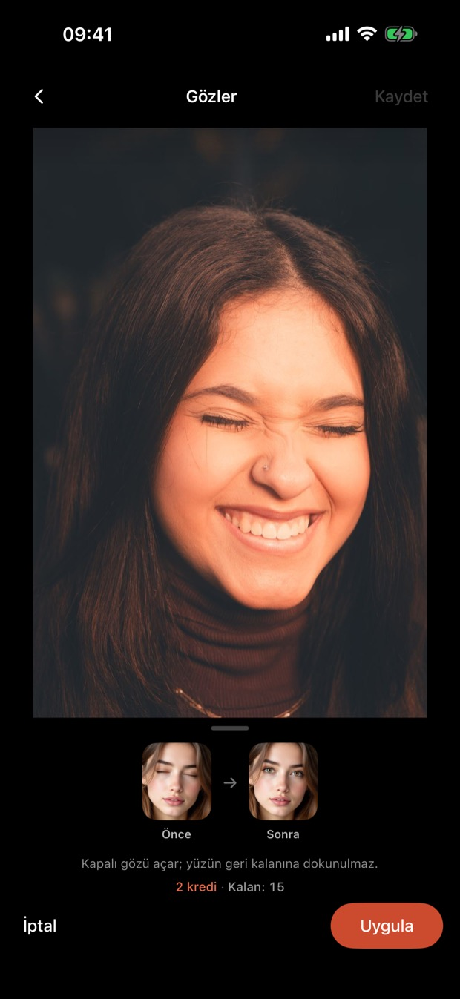
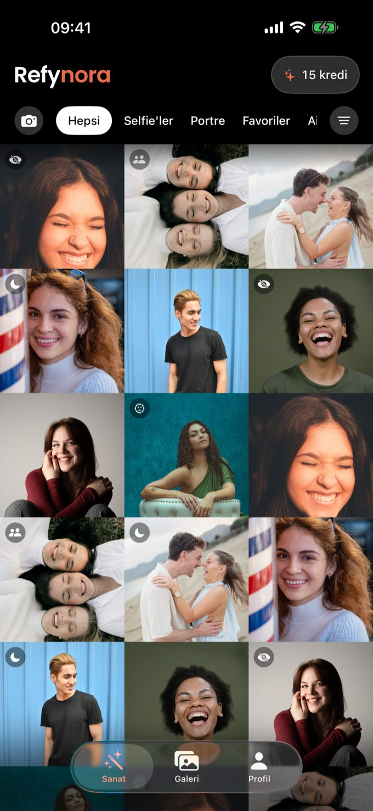
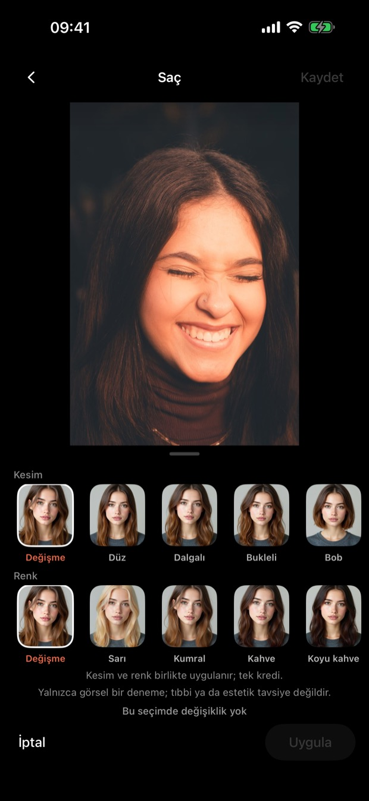
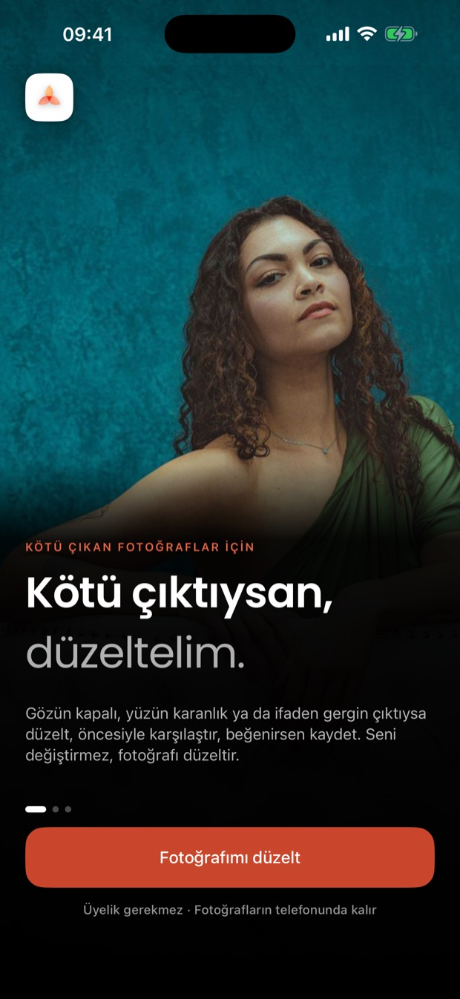

Gözler
Kapalı gözü açar; yüzün geri kalanına dokunulmaz.
KÖTÜ ÇIKAN FOTOĞRAFLAR İÇİN
Kapalı göz, gergin ifade, karanlık kare. Düzelt, öncesiyle karşılaştır, beğenirsen kaydet.
Yakında App Store’da


Kapalı gözü açar; yüzün geri kalanına dokunulmaz.

Saç, sakal, gözlük: yalnızca görsel bir deneme; yüz hatların aynı kalır.

Basılı tut, öncesiyle karşılaştır. Sonuç yine sensin; sadece iyi çıkmış hâlin.
Üyelik gerekmez · Fotoğrafların telefonunda kalır
Her düzeltme 1–2 kredi. Süresiz, abonelik yok.
Yaz, bir iş günü içinde dönelim.